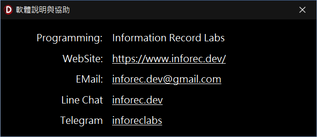

軟體說明與協助說明
於軟體使用過程中，如遇操作疑問或異常狀況，得透過本視窗提供的協助方式，進入相關社群協力平台進行經驗分享與問題解決。
一、 協助與交流
-
社群協力與技術資源：
- 「Programming」：本軟體智慧財產權（著作權）歸屬 Information Record。
- 「WebSite」：本專案文案頁面暨專案下載頁面為 https://www.inforec.dev/，提供既有版本更新之衍生下載權益說明。
- 「EMail」：電子信箱為 inforec.dev@gmail.com，用於接收軟體異常與技術優化建議。
- 「Line Chat」：社群協力平台
inforec.dev，供使用者進行本機運作經驗分享與互助。
- 「Telegram」：社群協力平台
inforeclabs，提供另一非中心化之社群協力討論區。

軟體說明與協助視窗